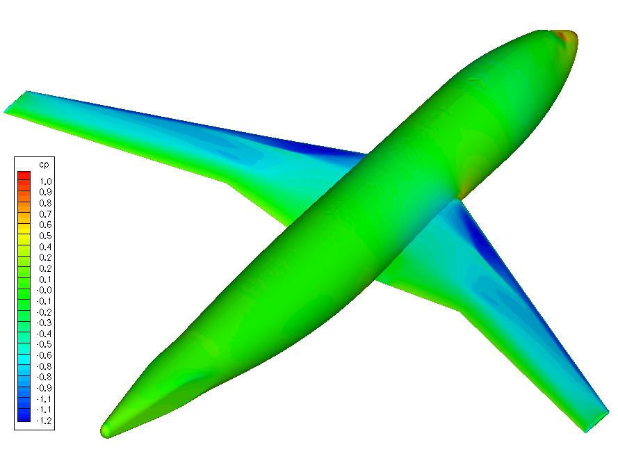
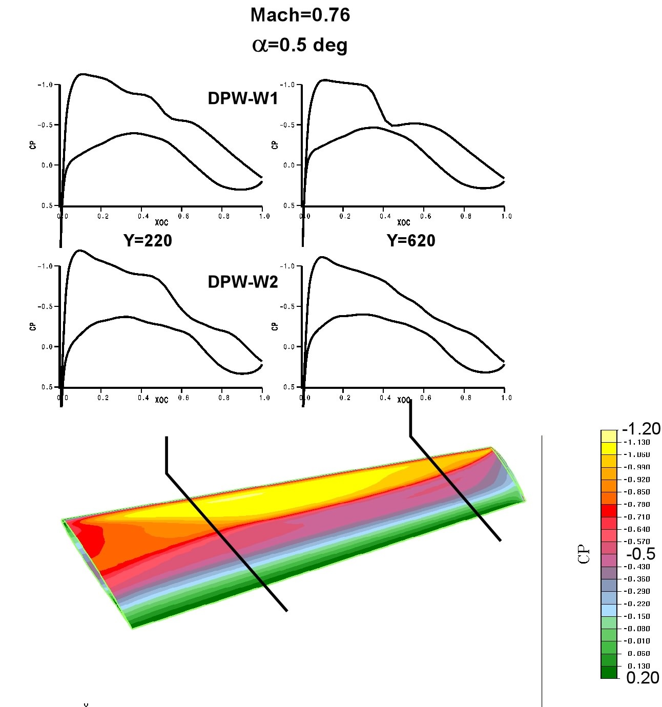
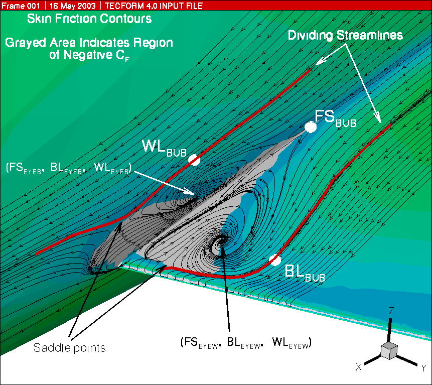

3rd
AIAA CFD Drag Prediction Workshop
Sponsored
by the Applied Aerodynamics TC
2-Day
Workshop Preceding the 25th APA
Conference
San
Francisco, CA
June 3-4, 2006

Objectives
- To build on the success of past AIAA Drag Prediction Workshops.
- To assess the state-of-the-art computational methods as practical
aerodynamic tools for aircraft force and moment prediction of industry
relevant geometries.
- To provide an impartial forum for evaluating the effectiveness of
existing computer codes and modeling techniques using Navier-Stokes
solvers.
- To identify areas needing additional research and development.
Focus
- The focus
of
this workshop will be on 'blind' drag prediction accuracy; a priori
experimental data will not be available for comparison.
- In
addition to the DLR-F6 wing-body with FX2B fairing transport model,
wing-only
models, DPW-W1 and -W2, will be included to encourage academic
participation and allow more exhaustive grid convergence studies.
- The DLR-F6
with the FX2B fairing substantially reduces boundary layer
separation at the wing-body juncture.
- DPW-W1 and
-W2 are two similar modern, transonic wing-only
configurations suitable for grid convergence and drag increment studies.
- A
statistical framework will be used to assess the results.
General
Information
- This
workshop is open to participants worldwide. Efforts will be made to
ensure representation from all areas of industry, academia and
government laboratories.
- Participation
in the drag studies is not required to attend the workshop. Everyone is
welcome!
- Open
forums will be included in the workshop to discuss the solutions and
modeling techniques.
- Results
will be made available after the workshop in a report and on the DPW
website.
- A nominal
registration fee will be required for attendance.
- AIAA
membership is not required.
Sample results for DPW-W1 and DPW-W2 cases

Dates
Geometries
Available
|
July
31
|
2005
|
Grid
Submissions
|
October 7
|
2005
|
Grids
Available
|
November 4
|
2005
|
Abstracts
Due
|
February
10
|
2006
|
Acceptance
Notification
|
February
24
|
2006
|
Registration
|
May 8
|
2006
|
Data
Submittal
|
April
28
|
2006
|
Workshop
|
June
3 - 4
|
2006
|
Workshop
presentations will not be official AIAA papers, however, several
participants will be invited to support a special session on drag
prediction to be held during the AIAA Aerospace Sciences Meeting,
January 2007.
Committee
John
Vassberg
|
The Boeing Company
|
Ed Tinoco
|
Mori Mani
|
Tom
Zickuhr
|
Cessna Aircraft Company
|
Kelly Laflin
|
Rich
Wahls
|
NASA Langley Research Center
|
Joe Morrison
|
Dimitri
Mavriplis
|
University
of Wyoming
|
Bernhard
Eisfeld
|
DLR
|
Olaf Brodersen
|
Grids used to create submitted results must be provided to the DPW Committee
Data
Submittal Form
DPW-III DLR-F6 CASE-1 CP Data Form
DPW-III DLR-F6 CASE-1 Data Form
DPW-III DPW-Wing Alone CASE-2 CP Data Form
DPW-III DPW-Wing Alone CASE-2 Data Form

Workshop Presentations -- This link contains pdf copies of the presentation presented at the Workshop.
Workshop Agenda -- A PDF copy of the final Workshop agenda
Links
1st
AIAA CFD Drag Prediction Workshop
2nd
AIAA CFD
Drag Prediction Workshop
Contact
Email:
dpw@cessna.textron.com
FAQ
APA-TC
Home AIAA Home
For any questions, please contact the organizers at
dpw@cessna.textron.com
NASA Official Responsible for Content
Dr. Neal T. Frink
Last Updated
November 29, 2006